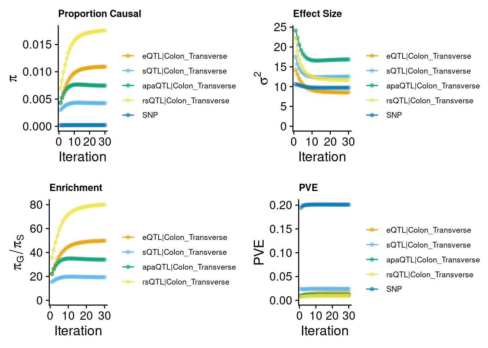
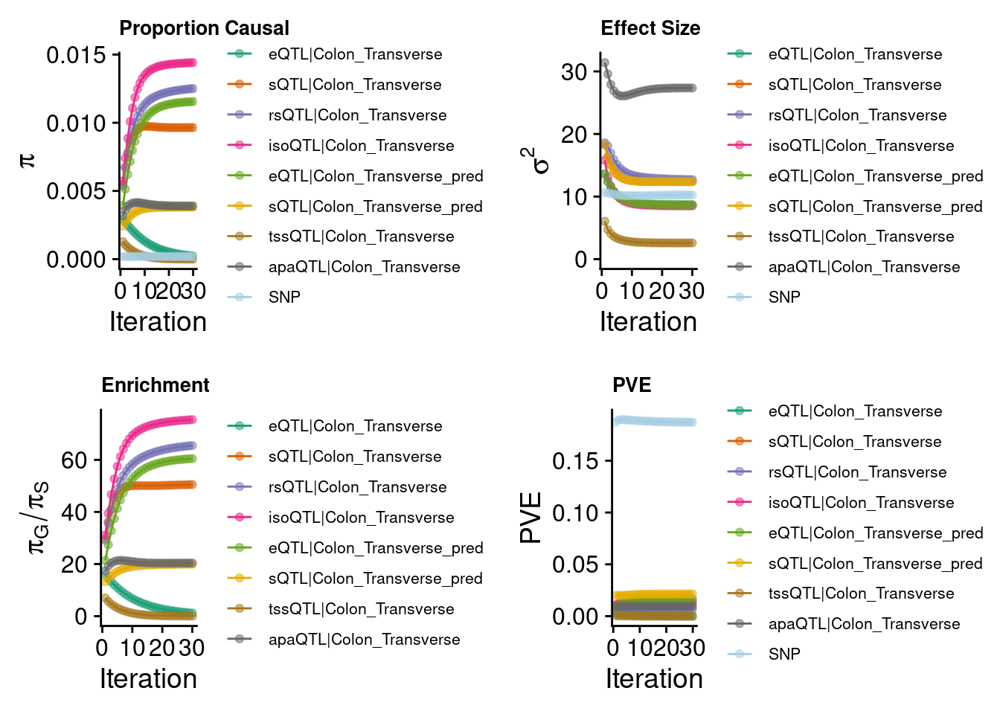
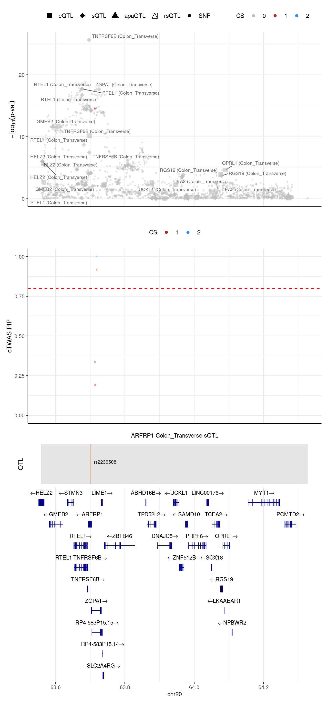
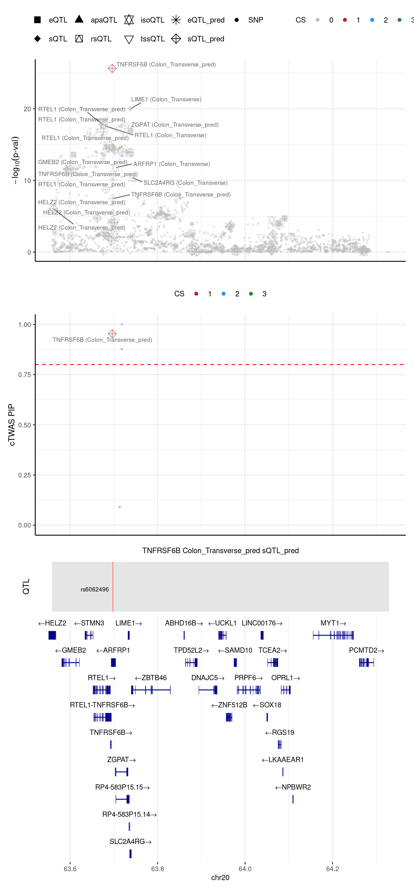
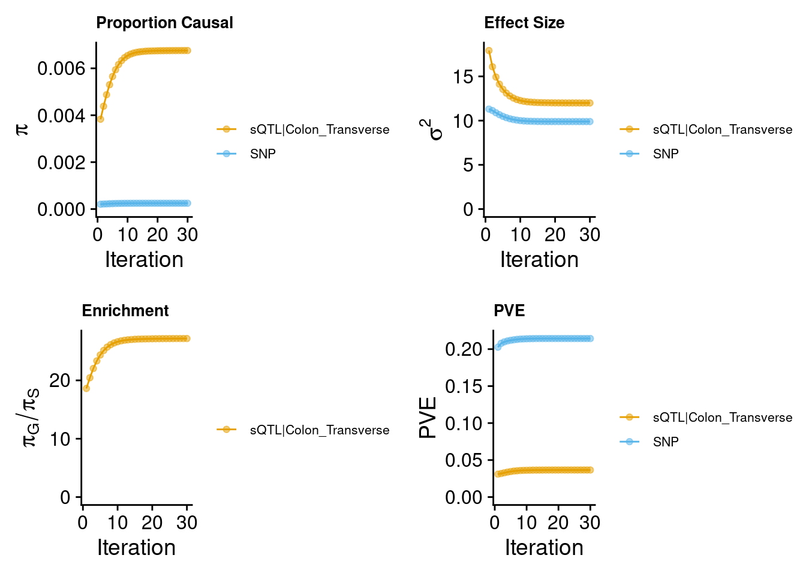
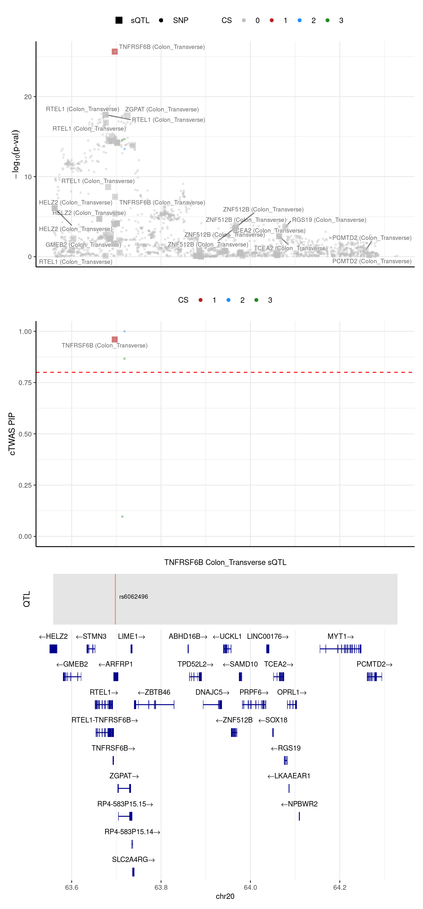

Last updated: 2024-09-19
Checks: 6 1
Knit directory: multigroup_ctwas_analysis/
This reproducible R Markdown analysis was created with workflowr (version 1.7.0). The Checks tab describes the reproducibility checks that were applied when the results were created. The Past versions tab lists the development history.
The R Markdown file has unstaged changes. To know which version of
the R Markdown file created these results, you’ll want to first commit
it to the Git repo. If you’re still working on the analysis, you can
ignore this warning. When you’re finished, you can run
wflow_publish to commit the R Markdown file and build the
HTML.
Great job! The global environment was empty. Objects defined in the global environment can affect the analysis in your R Markdown file in unknown ways. For reproduciblity it’s best to always run the code in an empty environment.
The command set.seed(20231112) was run prior to running
the code in the R Markdown file. Setting a seed ensures that any results
that rely on randomness, e.g. subsampling or permutations, are
reproducible.
Great job! Recording the operating system, R version, and package versions is critical for reproducibility.
Nice! There were no cached chunks for this analysis, so you can be confident that you successfully produced the results during this run.
Great job! Using relative paths to the files within your workflowr project makes it easier to run your code on other machines.
Great! You are using Git for version control. Tracking code development and connecting the code version to the results is critical for reproducibility.
The results in this page were generated with repository version c4bfcb0. See the Past versions tab to see a history of the changes made to the R Markdown and HTML files.
Note that you need to be careful to ensure that all relevant files for
the analysis have been committed to Git prior to generating the results
(you can use wflow_publish or
wflow_git_commit). workflowr only checks the R Markdown
file, but you know if there are other scripts or data files that it
depends on. Below is the status of the Git repository when the results
were generated:
Ignored files:
Ignored: .Rhistory
Ignored: results/
Unstaged changes:
Modified: analysis/multi_group_compare_predictdb_munro_4weights_8weights_update.Rmd
Note that any generated files, e.g. HTML, png, CSS, etc., are not included in this status report because it is ok for generated content to have uncommitted changes.
These are the previous versions of the repository in which changes were
made to the R Markdown
(analysis/multi_group_compare_predictdb_munro_4weights_8weights_update.Rmd)
and HTML
(docs/multi_group_compare_predictdb_munro_4weights_8weights_update.html)
files. If you’ve configured a remote Git repository (see
?wflow_git_remote), click on the hyperlinks in the table
below to view the files as they were in that past version.
| File | Version | Author | Date | Message |
|---|---|---|---|---|
| Rmd | 41a6670 | XSun | 2024-09-18 | update |
| html | 41a6670 | XSun | 2024-09-18 | update |
PredictDB:
all the PredictDB are converted from FUSION weights
PredictDB (eqtl, sqtl)
mem: 100g 5cores
predictdb eQTL + sQTL + Munro rsQTL + apaQTL

| Version | Author | Date |
|---|---|---|
| 41a6670 | XSun | 2024-09-18 |
Warning: Expected 2 pieces. Missing pieces filled with `NA` in 814514 rows [131, 132,
133, 134, 135, 136, 137, 138, 139, 140, 141, 142, 143, 144, 145, 146, 147, 148,
149, 150, ...].2024-09-19 13:20:57 INFO::Annotating fine-mapping result ...
2024-09-19 13:20:57 INFO::Map molecular traits to genes
2024-09-19 13:20:58 INFO::Split PIPs for molecular traits mapped to multiple genes
2024-09-19 13:21:07 INFO::Add gene positions
2024-09-19 13:21:08 INFO::Add SNP positions2024-09-19 13:21:28 INFO::Limit gene results to credible setspredictdb eQTL + sQTL + Munro 6 modalities

| Version | Author | Date |
|---|---|---|
| 41a6670 | XSun | 2024-09-18 |
Warning: Expected 2 pieces. Missing pieces filled with `NA` in 852856 rows [243, 244,
245, 246, 247, 248, 249, 250, 251, 252, 253, 254, 255, 256, 257, 258, 259, 260,
261, 262, ...].2024-09-19 13:22:12 INFO::Annotating fine-mapping result ...
2024-09-19 13:22:12 INFO::Map molecular traits to genes
2024-09-19 13:22:13 INFO::Split PIPs for molecular traits mapped to multiple genes
2024-09-19 13:22:17 INFO::Add gene positions
2024-09-19 13:22:17 INFO::Add SNP positions2024-09-19 13:22:29 INFO::Limit gene results to credible sets[1] "all genes discovered by 4 weights setting were overlapped with 8 weights setting"Unique genes reported by 8 weights setting
We notice TNFRSF6B PIP was from predictdb sQTL, it should be discovered in the 4 weights setting. And this gene has some known roles in IBD.
https://pubmed.ncbi.nlm.nih.gov/23965943/
https://jbiomedsci.biomedcentral.com/articles/10.1186/s12929-017-0347-7
https://www.nature.com/articles/s41598-021-88489-w
[1] "Locus plot -- 4 weights setting"[1] "The estimated L = 3"2024-09-19 13:22:31 INFO::Limit to protein coding genes
2024-09-19 13:22:31 INFO::focal id: intron_20_63701898_63702136|splicing_Colon_Transverse
2024-09-19 13:22:31 INFO::focal molecular trait: ARFRP1 Colon_Transverse sQTL
2024-09-19 13:22:31 INFO::Range of locus: chr20:63558727-64328976
2024-09-19 13:22:32 INFO::focal molecular trait QTL positions: 63701763
2024-09-19 13:22:32 INFO::Limit PIPs to credible sets
| Version | Author | Date |
|---|---|---|
| 41a6670 | XSun | 2024-09-18 |
[1] "Locus plot -- 8 weights setting"[1] "The estimated L = 3"2024-09-19 13:22:37 INFO::Limit to protein coding genes
2024-09-19 13:22:37 INFO::focal id: intron_20_63695854_63696760|splicing_Colon_Transverse
2024-09-19 13:22:37 INFO::focal molecular trait: TNFRSF6B Colon_Transverse_pred sQTL_pred
2024-09-19 13:22:37 INFO::Range of locus: chr20:63558727-64328976
2024-09-19 13:22:37 INFO::focal molecular trait QTL positions: 63697746
2024-09-19 13:22:37 INFO::Limit PIPs to credible sets
| Version | Author | Date |
|---|---|---|
| 41a6670 | XSun | 2024-09-18 |
[1] "weights for "
[1] "ENSG00000243509:chr20:63695854:63696760:clu_44474_+|splicing_Colon_Transverse"
weight
rs6011040 -0.0211776
rs8957 -0.0255221
[1] "weights for "
[1] "ENSG00000243509.4|expression_Colon_Transverse"
weight
rs41298344 -0.1634486
rs55765053 0.0848684
[1] "weights for "
[1] "intron_20_63697191_63697328|splicing_Colon_Transverse"
weight
rs55765053 0.2576402
[1] "weights for "
[1] "intron_20_63697522_63698280|splicing_Colon_Transverse"
weight
rs74748720 -0.01402964
[1] "weights for "
[1] "intron_20_63695854_63696760|splicing_Colon_Transverse"
weight
rs6062496 -0.0549018The LD for the high pip SNPs in 4 weights setting and the sQTLs in 8 weights setting. The SNPs in row1 and row2 (column1 and column2) are the high pip SNPs in 4 weights setting.
We notice that, the 2 high pip SNPs are in LD themselves. And they are in LD with rs6011040 and rs8957, the sQTL for ENSG00000243509:chr20:63695854:63696760:clu_44474_+|splicing_Colon_Transverse, whose susie pip = 7.516698e-11 in 8 weights setting.
| RS_number | rs6089961 | rs202143810 | rs41298344 | rs55765053 | rs6062496 | rs74748720 | rs6011040 | rs8957 |
|---|---|---|---|---|---|---|---|---|
| rs6089961 | 1.0 | 0.963 | 0.164 | 0.021 | 0.364 | 0.009 | 0.592 | 0.447 |
| rs202143810 | 0.963 | 1.0 | 0.152 | 0.02 | 0.35 | 0.008 | 0.569 | 0.445 |
| rs41298344 | 0.164 | 0.152 | 1.0 | 0.004 | 0.071 | 0.002 | 0.103 | 0.128 |
| rs55765053 | 0.021 | 0.02 | 0.004 | 1.0 | 0.055 | 0.003 | 0.034 | 0.028 |
| rs6062496 | 0.364 | 0.35 | 0.071 | 0.055 | 1.0 | 0.023 | 0.611 | 0.486 |
| rs74748720 | 0.009 | 0.008 | 0.002 | 0.003 | 0.023 | 1.0 | 0.014 | 0.012 |
| rs6011040 | 0.592 | 0.569 | 0.103 | 0.034 | 0.611 | 0.014 | 1.0 | 0.791 |
| rs8957 | 0.447 | 0.445 | 0.128 | 0.028 | 0.486 | 0.012 | 0.791 | 1.0 |
However, the earlier 2 SNPs still have high pip

| Version | Author | Date |
|---|---|---|
| 41a6670 | XSun | 2024-09-18 |
Warning: Expected 2 pieces. Missing pieces filled with `NA` in 792906 rows [89, 90, 91,
92, 93, 94, 95, 96, 97, 98, 99, 100, 101, 102, 103, 104, 105, 106, 107, 108,
...].2024-09-19 13:23:26 INFO::Annotating fine-mapping result ...
2024-09-19 13:23:26 INFO::Map molecular traits to genes
2024-09-19 13:23:26 INFO::Split PIPs for molecular traits mapped to multiple genes
2024-09-19 13:23:28 INFO::Add gene positions
2024-09-19 13:23:29 INFO::Add SNP positions2024-09-19 13:23:34 INFO::Limit gene results to credible setsFor the earlier example, TNFRSF6B.
[1] "Locus plot -- sQTL setting"[1] "The estimated L = 3"2024-09-19 13:23:41 INFO::Limit to protein coding genes
2024-09-19 13:23:41 INFO::focal id: intron_20_63695854_63696760|splicing_Colon_Transverse
2024-09-19 13:23:41 INFO::focal molecular trait: TNFRSF6B Colon_Transverse sQTL
2024-09-19 13:23:41 INFO::Range of locus: chr20:63558727-64328976
2024-09-19 13:23:41 INFO::focal molecular trait QTL positions: 63697746
2024-09-19 13:23:41 INFO::Limit PIPs to credible sets
| Version | Author | Date |
|---|---|---|
| 41a6670 | XSun | 2024-09-18 |
| weights | pre-estimated L | genes with PIP > 0.8 | SNPs with PIP > 0.8 |
|---|---|---|---|
| predictdb eQTL + sQTL | 3 | / | rs6089961, rs202143810 |
| predictdb eQTL + sQTL | set L=1 manually | TNFRSF6B | / |
| predictdb eQTL + sQTL | set L=10 manually | ARFRP: combined pip > 0.8 | rs202143810 |
| predictdb sQTL | 3 | TNFRSF6B | rs6089961, rs202143810 |
| predictdb eQTL + sQTL + Munro rsQTL + apaQTL | 3 | / | rs6089961, rs202143810 |
| predictdb eQTL + sQTL + Munro rsQTL + apaQTL | set L=10 manually | ARFRP: combined pip > 0.8 | rs6089961, rs202143810 |
| predictdb eQTL + sQTL + Munro 6 modalities | 3 | TNFRSF6B | rs6089961, rs202143810 |
| Munro 6 modalities, region merge | 4 | / | rs6089961, rs202143810 |
predictdb sQTL, uniform prior
| L | PIP_TNFRSF6B | CS_TNFRSF6B | PIP_rs6062496(sQTL) | CS_rs6062496(sQTL) | PIP_rs6089961 | CS_rs6089961 | PIP_rs202143810 | CS_rs202143810 |
|---|---|---|---|---|---|---|---|---|
| 1 | 0.98 | 1 | 0.02 | 0 | 0 | 0 | 0 | 0 |
| 2 | 0 | 0 | 0 | 0 | 0.87 | 1 | 1 | 2 |
| 3 | 0.96 | 1 | 0 | 0 | 0.87 | 3 | 1 | 2 |
| 4 | 0 | 0 | 0 | 0 | 0.97 | 1 | 1 | 2 |
| 5 | 0.99 | 3 | 0.01 | 0 | 0.97 | 3 | 1 | 2 |
| 6 | 0 | 0 | 0 | 0 | 0.99 | 1 | 1 | 2 |
| 7 | 0.99 | 1 | 0.01 | 0 | 0.99 | 3 | 1 | 2 |
| 8 | 0 | 0 | 0 | 0 | 0.99 | 1 | 1 | 2 |
| 9 | 0.99 | 1 | 0.01 | 0 | 1 | 3 | 1 | 2 |
| 10 | 0 | 0 | 0 | 0 | 1 | 1 | 1 | 2 |
IBD GWAS only, uniform prior
L=1~10, rs6062496 is the only SNP with PIP > 0.8 & in CS. The PIP for this SNP is 1. For the other two SNPs, rs6089961 and rs202143810, the highest PIP is 0.002.
sessionInfo()R version 4.2.0 (2022-04-22)
Platform: x86_64-pc-linux-gnu (64-bit)
Running under: CentOS Linux 7 (Core)
Matrix products: default
BLAS/LAPACK: /software/openblas-0.3.13-el7-x86_64/lib/libopenblas_haswellp-r0.3.13.so
locale:
[1] C
attached base packages:
[1] stats4 stats graphics grDevices utils datasets methods
[8] base
other attached packages:
[1] EnsDb.Hsapiens.v86_2.99.0 ensembldb_2.20.2
[3] AnnotationFilter_1.20.0 GenomicFeatures_1.48.3
[5] AnnotationDbi_1.58.0 Biobase_2.56.0
[7] GenomicRanges_1.48.0 GenomeInfoDb_1.39.9
[9] IRanges_2.30.0 S4Vectors_0.34.0
[11] BiocGenerics_0.42.0 forcats_0.5.1
[13] stringr_1.5.1 dplyr_1.1.4
[15] purrr_1.0.2 readr_2.1.2
[17] tidyr_1.3.0 tibble_3.2.1
[19] ggplot2_3.5.1 tidyverse_1.3.1
[21] data.table_1.14.2 ctwas_0.4.14
loaded via a namespace (and not attached):
[1] colorspace_2.0-3 rjson_0.2.21
[3] ellipsis_0.3.2 rprojroot_2.0.3
[5] XVector_0.36.0 locuszoomr_0.2.1
[7] fs_1.5.2 rstudioapi_0.13
[9] farver_2.1.0 DT_0.22
[11] ggrepel_0.9.1 bit64_4.0.5
[13] lubridate_1.8.0 fansi_1.0.3
[15] xml2_1.3.3 codetools_0.2-18
[17] logging_0.10-108 cachem_1.0.6
[19] knitr_1.39 jsonlite_1.8.0
[21] workflowr_1.7.0 Rsamtools_2.12.0
[23] broom_0.8.0 dbplyr_2.1.1
[25] png_0.1-7 compiler_4.2.0
[27] httr_1.4.3 backports_1.4.1
[29] assertthat_0.2.1 Matrix_1.5-3
[31] fastmap_1.1.0 lazyeval_0.2.2
[33] cli_3.6.1 later_1.3.0
[35] htmltools_0.5.2 prettyunits_1.1.1
[37] tools_4.2.0 gtable_0.3.0
[39] glue_1.6.2 GenomeInfoDbData_1.2.8
[41] rappdirs_0.3.3 Rcpp_1.0.12
[43] cellranger_1.1.0 jquerylib_0.1.4
[45] vctrs_0.6.5 Biostrings_2.64.0
[47] rtracklayer_1.56.0 crosstalk_1.2.0
[49] xfun_0.41 rvest_1.0.2
[51] lifecycle_1.0.4 irlba_2.3.5
[53] restfulr_0.0.14 XML_3.99-0.14
[55] zlibbioc_1.42.0 zoo_1.8-10
[57] scales_1.3.0 gggrid_0.2-0
[59] hms_1.1.1 promises_1.2.0.1
[61] MatrixGenerics_1.8.0 ProtGenerics_1.28.0
[63] parallel_4.2.0 SummarizedExperiment_1.26.1
[65] LDlinkR_1.2.3 yaml_2.3.5
[67] curl_4.3.2 memoise_2.0.1
[69] sass_0.4.1 biomaRt_2.54.1
[71] stringi_1.7.6 RSQLite_2.3.1
[73] highr_0.9 BiocIO_1.6.0
[75] filelock_1.0.2 BiocParallel_1.30.3
[77] rlang_1.1.2 pkgconfig_2.0.3
[79] matrixStats_0.62.0 bitops_1.0-7
[81] evaluate_0.15 lattice_0.20-45
[83] labeling_0.4.2 GenomicAlignments_1.32.0
[85] htmlwidgets_1.5.4 cowplot_1.1.1
[87] bit_4.0.4 tidyselect_1.2.0
[89] magrittr_2.0.3 R6_2.5.1
[91] generics_0.1.2 DelayedArray_0.22.0
[93] DBI_1.2.2 withr_2.5.0
[95] haven_2.5.0 pgenlibr_0.3.3
[97] pillar_1.9.0 whisker_0.4
[99] KEGGREST_1.36.3 RCurl_1.98-1.7
[101] mixsqp_0.3-43 modelr_0.1.8
[103] crayon_1.5.1 utf8_1.2.2
[105] BiocFileCache_2.4.0 plotly_4.10.0
[107] tzdb_0.4.0 rmarkdown_2.25
[109] progress_1.2.2 readxl_1.4.0
[111] grid_4.2.0 blob_1.2.3
[113] git2r_0.30.1 reprex_2.0.1
[115] digest_0.6.29 httpuv_1.6.5
[117] munsell_0.5.0 viridisLite_0.4.0
[119] bslib_0.3.1